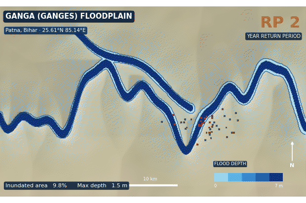

Transforming catastrophe data into actionable risk intelligence
Next-generation catastrophe modelling and climate resilience for insurers, reinsurers, governments and infrastructure owners — built on transparent science and cloud-native engineering.
A complete catastrophe stack
From peril science to portfolio loss — every layer engineered for accuracy, traceability, and scale.
Flood risk modelling
High-resolution fluvial, pluvial, and coastal hazard with depth-damage loss estimation down to the property footprint.
Up to 5 m resolution →Earthquake risk modelling
Probabilistic seismic hazard with site amplification, ground-motion fields, and structural vulnerability curves.
Full PSHA workflow →Cyclone & wind risk
Tropical cyclone tracks, gust fields, and storm-surge inundation calibrated to historical and synthetic event sets.
Surge + wind coupled →Climate risk analytics
Forward-looking peril shifts under SSP/RCP pathways for 2030, 2050, and 2100 climate horizons.
SSP1–SSP5 scenarios →Exposure database services
Cleansing, enrichment, and high-precision geocoding to turn messy schedules into model-ready exposure.
Rooftop geocoding →Portfolio risk analysis
Accumulation, AAL, and full OEP/AEP loss curves with reinsurance structures applied across your book.
OEP / AEP curves →What a flood model actually produces
Ganges floodplain at Patna, Bihar — modelled inundation extent and depth cycling through return periods.
Return periods, not a single map
A flood model isn't one boundary line. It's a family of scenarios — each with its own probability, extent, and depth field — which is what lets you price risk instead of merely marking a zone.
The same output drives everything downstream — property-level depth lookups, depth-damage curves, and portfolio accumulation.

Katxel flood model output. Inundated area and maximum depth update with each return period in the cycle.
Explore the perils we model
Select a hazard to inspect its coverage, resolution, return periods, and headline risk metric.
Flood
Combined fluvial, pluvial, and coastal flood hazard with depth grids and property-level loss.
See every peril on one map
A single workspace to query hazard layers, score locations, and analyse portfolio loss — no GIS expertise required.
- Interactive GIS maps with switchable hazard and exposure layers
- Location-level risk scores returned in milliseconds
- Portfolio loss analytics with return-period breakdowns
- Side-by-side present-day and future climate scenarios
Outcomes, not just outputs
National flood risk assessment
Nationwide RP flood layers delivered to a government agency to guide zoning and resilience funding.
Portfolio optimization
Re-priced a multi-peril book by identifying loss-driving accumulations, cutting tail exposure.
Resilience planning
Ranked critical assets by multi-hazard exposure to sequence a decade of hardening investment.
Climate adaptation analytics
Quantified peril shifts to 2050 so a utility could stress-test assets under warming scenarios.
What partners say
The transparency is what sold us. We can finally trace a loss number back to its hazard and vulnerability assumptions in front of a regulator.
Katxel's flood layers gave our national resilience program a defensible, consistent basis for funding decisions across every district.
The API dropped into our underwriting flow in a sprint. Risk scores at the point of quote changed how the whole team works.
The engine behind the maps
A modular stack — use the whole platform or plug a single component into yours.
Katxel Engine
Cloud-native catastrophe simulation that runs millions of synthetic events in parallel.
Katxel GIS
Interactive risk visualization built on vector tiles and on-the-fly raster sampling.
Katxel Climate
Climate-adjusted projections across IPCC pathways and multiple time horizons.
Katxel API
Real-time risk scoring endpoints that drop straight into underwriting workflows.
The other three divisions
Schedule a consultation
Tell us about your perils and portfolio. We'll show you exactly what Katxel can see.